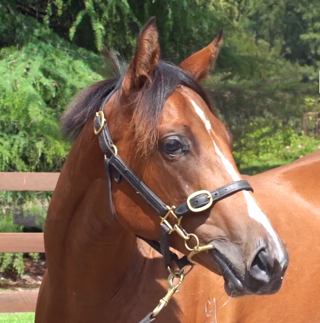

Dù có vóc dáng nhỏ bé và từng bị từ chối trong các cuộc đấu giá, Northern Dancer đã chứng minh mọi lời chỉ trích là sai lầm bằng cách giành chiến thắng tại Kentucky Derby với kỷ lục thời gian lúc bấy giờ.
Ảnh hưởng: Hơn 70% ngựa đua Thoroughbred hiện nay có dòng máu của ông.
Sau khi giải nghệ, ông trở thành ngựa giống thành công nhất thế kỷ 20. Phí phối giống của ông từng lên tới 1 triệu USD — một con số không tưởng vào thời điểm đó.